Faith to GroW × Global Inspire
FUTURE BUILDERS FELLOWSHIP 2026
Panduan Lengkap
Dashboard Fasil
Buku pegangan operasional untuk mengelola peserta, mentor, kurikulum, tugas, LMS, kegiatan, presensi, sertifikat, laporan, serta keamanan program.
18 modulkendali program terpusat
3 peranFasil, mentor, dan mentee
1 sumber dataSupabase dan audit log
Versi 1.0
Disusun dari dashboard produksi
13 Agustus 2026 · Asia/Makassar
Tentang panduanTujuan dan cara menggunakan dokumen
Panduan ini membantu Fasil menjalankan program tanpa perlu memahami kode aplikasi. Setiap bagian menjelaskan tujuan menu, langkah kerja, hasil yang diharapkan, dan tindakan yang perlu dihindari.
Prinsip operasional
Satu sumber dataGunakan dashboard untuk perubahan resmi, bukan catatan terpisah.
Hak akses minimumJangan membagikan akun Fasil kepada mentor atau peserta.
Semua dapat diauditPerubahan penting menyimpan pelaku, waktu, target, dan detail.
Daftar isi
01Orientasi dashboard
10LMS dan rekaman
02Rutinitas Fasil
11Kalender program
03Verifikasi pendaftaran
12Presensi QR
04Kelola akun
13Sertifikat
05Disiplin peserta
14Kesehatan program
06Cohort dan pairing
15Audit, backup, laporan
07Pengaturan program
16Notifikasi dan email
08Kurikulum dan Canvas
17Troubleshooting
09Tugas dan rubrik
18Checklist operasional
01 · OrientasiMengenal Dashboard Fasil
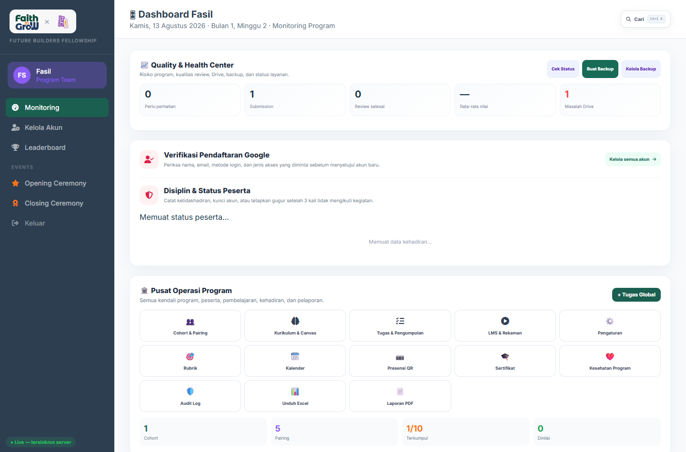
Gambar 1. Dashboard produksi Fasil: Quality & Health Center, verifikasi peserta, disiplin, dan Pusat Operasi Program.
SidebarMonitoring, Kelola Akun, Leaderboard, kegiatan, dan keluar.
Quality & HealthRingkasan risiko, pengumpulan, review, nilai, dan masalah Drive.
Pusat OperasiKendali kurikulum, tugas, LMS, jadwal, presensi, dan laporan.
Data dashboard bersifat hidup. Angka berubah mengikuti aktivitas pengguna. Jika kartu masih bertuliskan “Memuat…”, tunggu beberapa detik atau muat ulang halaman.
02 · RutinitasSOP harian, mingguan, dan akhir program
Setiap hariPeriksa pendaftaran baru, tugas terlambat, submission menunggu review, integrasi, dan peserta berisiko.
Setiap mingguAktifkan minggu belajar, perbarui kalender, cek presensi, audit mentor, dan kirim pengingat.
Akhir programValidasi kelulusan, terbitkan sertifikat, ekspor laporan, dan buat backup.
Checklist pembukaan hari
- Buka Quality & Health Center dan pastikan database, Drive, reminder, serta email sehat.
- Periksa Verifikasi Pendaftaran Google; setujui hanya identitas yang dikenali.
- Periksa Tugas & Pengumpulan; tindak lanjuti review yang menumpuk.
- Periksa Kesehatan Program; hubungi peserta berisiko.
- Pastikan agenda hari tersebut ada di Kalender.
Urutan operasional minggu baru
- Pastikan materi dan pertanyaan minggu berikutnya sudah final.
- Atur minggu aktif melalui Kurikulum & Canvas.
- Periksa deadline tugas dan rubrik.
- Tambahkan kegiatan dan link pertemuan ke kalender.
- Buat presensi QR sebelum kegiatan.
- Pantau notifikasi dan email pengingat.
Pusat kendaliPusat Operasi Program
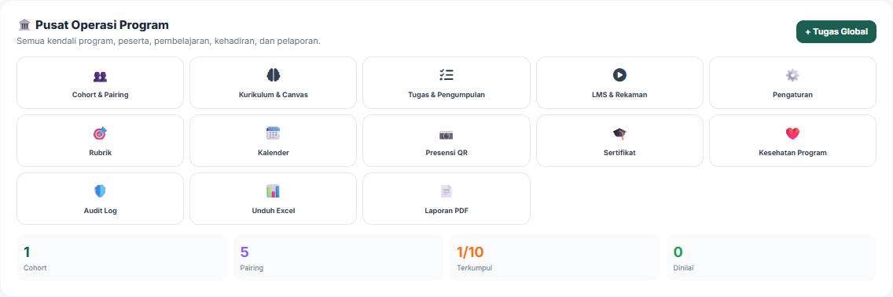
Gambar 2. Seluruh kendali administratif tersedia dalam satu panel.
| Menu | Fungsi utama | Kapan digunakan |
|---|
| Cohort & Pairing | Mengelompokkan program dan memasangkan mentor | Awal cohort atau perubahan pendamping |
| Kurikulum & Canvas | Mengatur konten serta pembukaan minggu | Sebelum minggu belajar dimulai |
| Tugas & Pengumpulan | Monitoring seluruh tugas dan status submission | Harian |
| LMS & Rekaman | Menerbitkan video pembelajaran | Setelah sesi direkam |
| Pengaturan | Mengubah periode, fase, KPI, dan syarat lulus | Saat kebijakan berubah |
| Rubrik | Mengelola kriteria dan bobot penilaian | Sebelum tugas dipublikasikan |
| Kalender / Presensi | Agenda resmi dan bukti kehadiran | Sebelum kegiatan |
| Sertifikat | Validasi dan penerbitan kelulusan | Akhir program |
| Audit / Laporan | Pelacakan tindakan dan ekspor data | Monitoring dan evaluasi |
03 · PendaftaranVerifikasi pendaftaran Google
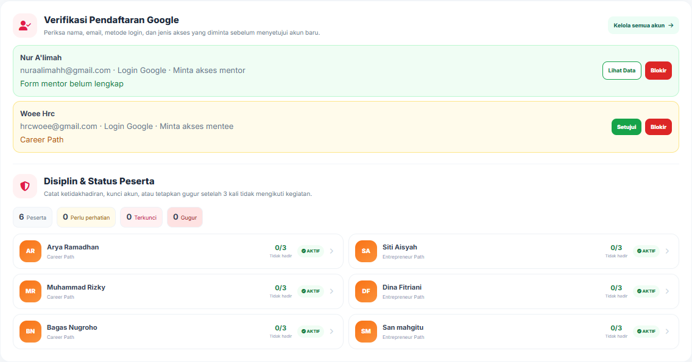
Gambar 3. Area pendaftaran baru dan status disiplin peserta.
- Cocokkan nama lengkap, alamat email, provider login, dan role yang diminta.
- Untuk calon mentor, buka data profesional: WhatsApp, jabatan, institusi, pengalaman, LinkedIn, motivasi, serta komitmen.
- Jika identitas benar, klik Setujui. Akun berubah menjadi aktif.
- Jika pengguna tidak dikenal, pilih Blokir dan tuliskan alasan yang jelas.
Jangan setujui akun hanya karena alamat Gmail terlihat wajar. Selalu cocokkan dengan daftar peserta/mentor resmi. Pengguna acak yang mendaftar tetap harus menunggu persetujuan Fasil.
Hasil keputusan
Google Login→Lengkapi profil→Menunggu→Disetujui / Diblokir
04 · AkunMengelola akun dengan aman
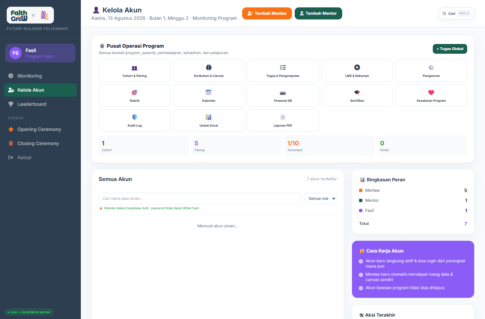
Gambar 4. Halaman Kelola Akun: pencarian, filter role, tambah mentee, dan tambah mentor.
Yang dapat dilakukan
Tambah akunBuat mentee atau mentor resmi dari dashboard.
Cari dan filterTemukan pengguna berdasarkan nama, email, atau role.
Kelola statusAktif, menunggu, terkunci, gugur, atau lulus.
Lihat providerKetahui apakah pengguna masuk lewat Google atau email.
Password tidak dapat dilihat Fasil. Password dikelola Supabase Auth. Jika pengguna lupa password, gunakan alur reset, bukan meminta atau menyimpan password peserta.
Larangan keamanan
- Jangan memakai satu akun bersama untuk beberapa Fasil.
- Jangan mengirim password melalui grup chat.
- Jangan mengubah role tanpa dasar administratif.
- Jangan menghapus histori untuk menutupi kesalahan; lakukan koreksi tercatat.
05 · DisiplinPeringatan, akun terkunci, dan gugur
Aktif→Peringatan 1→Peringatan 2→Akun Terkunci→Gugur
| Tindakan | Kapan digunakan | Dampak |
|---|
| Catat tidak hadir | Peserta tidak mengikuti kegiatan resmi | Jumlah ketidakhadiran dan warning bertambah |
| Koreksi −1 | Ada kesalahan pencatatan | Riwayat diperbaiki tanpa menghapus audit |
| Kunci akun | Pelanggaran atau tindak lanjut administratif | Pengguna tidak dapat login |
| Buka kunci | Masalah terselesaikan | Akses dipulihkan |
| Tetapkan gugur | Sudah tiga kali tidak mengikuti kegiatan | Status peserta dihentikan dan login terkunci |
- Klik nama peserta pada area Disiplin & Status Peserta.
- Baca jumlah ketidakhadiran dan status saat ini.
- Tuliskan catatan yang objektif: kegiatan, tanggal, dan alasan.
- Pilih tindakan. Untuk status gugur, sistem meminta konfirmasi tambahan.
- Pastikan notifikasi keputusan diterima peserta.
Keputusan gugur bukan tombol operasional biasa. Pastikan ada bukti kehadiran, komunikasi sebelumnya, dan persetujuan sesuai kebijakan program.
06 · Struktur pesertaCohort dan pairing mentor
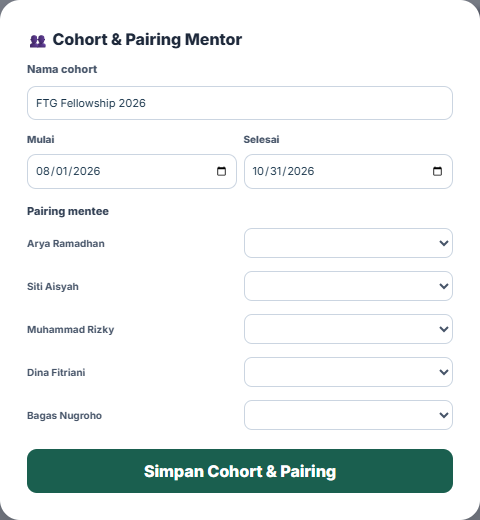
Tujuan
Memastikan setiap mentee berada dalam cohort yang benar dan memiliki mentor penanggung jawab.
- Isi nama cohort serta tanggal mulai dan selesai.
- Pilih mentor untuk masing-masing mentee.
- Simpan perubahan.
- Periksa jumlah pairing pada ringkasan dashboard.
Dampak pairing
Mentor hanya dapat memantau, memberi tugas, dan menilai mentee yang dipasangkan kepadanya.
Sebelum mengganti mentor
- Pastikan mentor baru sudah aktif dan disetujui.
- Informasikan perubahan kepada mentee dan mentor lama.
- Periksa tugas/review yang masih tertunda.
- Catat alasan perpindahan dalam administrasi program.
07 · KonfigurasiPengaturan program
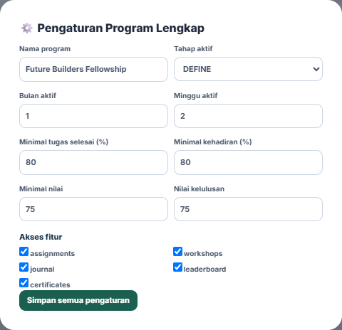
Parameter penting
- Nama program.
- Bulan dan minggu aktif.
- Fase Design Thinking aktif.
- Nilai kelulusan minimum.
- Syarat penyelesaian tugas.
- Syarat kehadiran.
- Syarat kualitas nilai.
- Bobot KPI dan feature flags.
Perubahan di sini berdampak luas. Mengganti minggu aktif atau syarat kelulusan dapat mengubah tampilan dan status banyak peserta sekaligus. Periksa nilai sebelum menekan Simpan.
Prosedur perubahan kebijakan
- Dokumentasikan keputusan program.
- Ubah pengaturan pada dashboard.
- Periksa dashboard mentee dan mentor setelah perubahan.
- Umumkan perubahan kepada pihak terkait.
- Konfirmasi perubahan tercatat di Audit Log.
08 · PembelajaranMengelola Kurikulum & Canvas
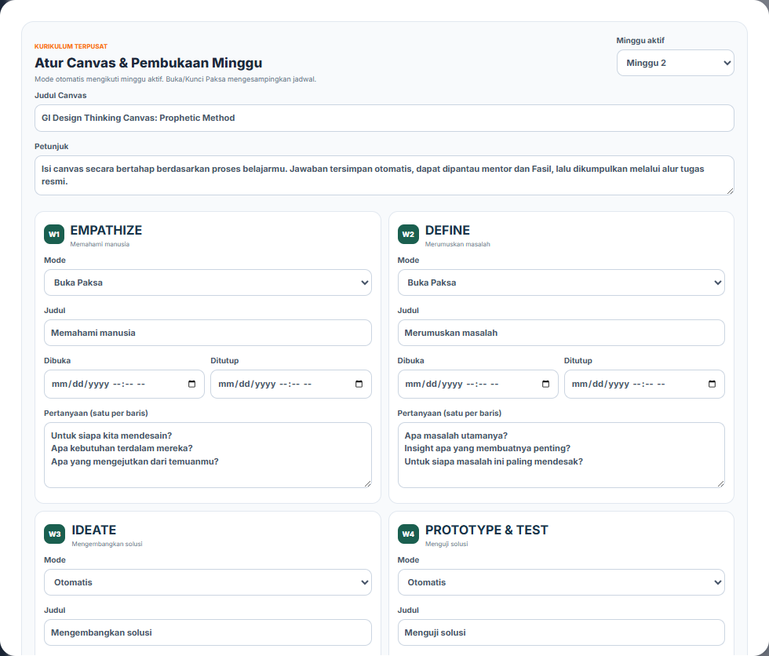
Gambar 5. Pengaturan empat minggu GI Design Thinking Canvas.
| Mode minggu | Perilaku | Gunakan ketika |
|---|
| Otomatis | Mengikuti minggu aktif dan tanggal buka/tutup | Operasional normal |
| Buka Paksa | Tetap terbuka meskipun jadwal belum masuk | Akses khusus atau fase transisi |
| Kunci Paksa | Tetap tertutup meskipun jadwal sudah masuk | Materi belum siap atau akses ditunda |
Langkah menerbitkan minggu
- Pilih Minggu aktif.
- Periksa judul Canvas dan petunjuk.
- Atur mode setiap minggu.
- Isi judul, tanggal buka/tutup, dan satu pertanyaan per baris.
- Klik Simpan & Publikasikan.
- Buka monitoring untuk memastikan target mentee tersinkron.
08 · Monitoring belajarMembaca progres Canvas mentee
Fasil dapat membaca progres seluruh mentee tanpa login atau menyamar sebagai mentee. Mentor hanya melihat mentee yang menjadi tanggung jawabnya.
Belum mulaiBelum ada jawaban tersimpan.
DraftJawaban tersimpan otomatis tetapi belum dikumpulkan.
Menunggu reviewVersi telah dikumpulkan kepada mentor.
Perlu revisiMentor meminta perbaikan.
DinilaiReview dan nilai telah diberikan.
Aktivitas terakhirMenunjukkan waktu simpan terakhir.
Apa yang perlu diperhatikan?
- Progres 0% setelah minggu berjalan.
- Draft tidak berubah selama beberapa hari.
- Jawaban sangat pendek atau tidak sesuai pertanyaan.
- Submission sudah dikumpulkan tetapi lama belum direview.
- Peserta mendapat revisi berulang.
Data Canvas aman di server. Jawaban tidak bergantung pada satu browser. Autosave, versi pengumpulan, review, dan audit menggunakan database terpusat.
09 · TugasMonitoring tugas dan pengumpulan
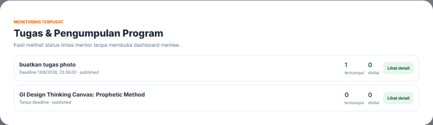
Dua sumber tugas
Tugas global dibuat Fasil untuk banyak peserta. Tugas mentor dibuat mentor untuk mentee dampingan.
Yang terlihat
- Judul dan status tugas.
- Deadline.
- Jumlah terkumpul.
- Jumlah dinilai.
- Status tiap peserta.
- Waktu aktivitas terakhir.
Alur resmi tugas
Tugas dibuat→Notifikasi→Draft→Drive pusat→Review→Nilai/Revisi
Pembagian tanggung jawab: mentor membuat dan menilai tugas kelompoknya; Fasil menetapkan kebijakan, membuat tugas global, serta memonitor semuanya.
09 · PenilaianRubrik penilaian fleksibel
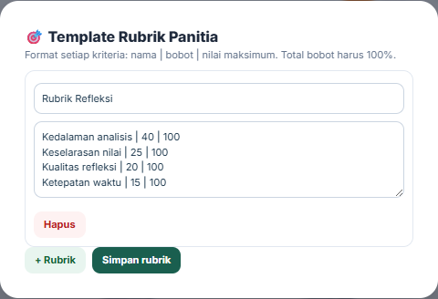
Prinsip rubrik
- Kriteria harus dapat diamati.
- Bobot total harus 100%.
- Gunakan bahasa yang dipahami mentor.
- Publikasikan sebelum tugas dinilai.
- Jangan mengubah bobot setelah sebagian peserta dinilai tanpa kebijakan koreksi.
| Contoh kriteria | Bobot | Yang dinilai |
|---|
| Kedalaman analisis | 30% | Kualitas observasi dan argumen |
| Kesesuaian nilai/niyyah | 25% | Keselarasan solusi dengan nilai |
| Kualitas solusi | 25% | Kelayakan dan dampak gagasan |
| Refleksi dan etika | 20% | Kejujuran belajar dan pertimbangan etis |
10 · LMSMengelola video dan rekaman
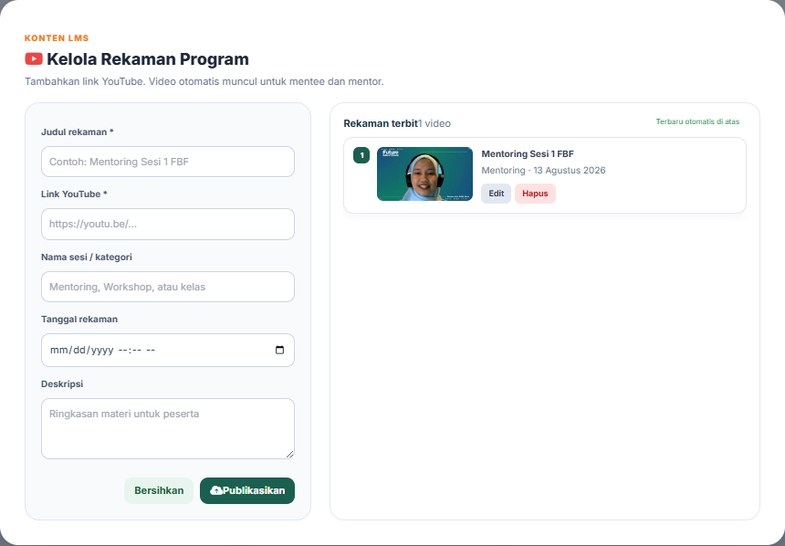
Gambar 6. Pengelola rekaman resmi untuk Workshop Library mentee dan mentor.
- Masukkan judul video yang konsisten.
- Tempel URL YouTube yang valid.
- Isi nama sesi, tanggal rekaman, dan deskripsi.
- Simpan. Video muncul otomatis di Workshop Library.
- Gunakan Edit jika metadata salah; Hapus hanya jika video memang tidak boleh diakses.
Hanya Fasil yang dapat menerbitkan rekaman. Pastikan video memiliki izin publik/unlisted yang sesuai dan tidak mengandung data pribadi yang seharusnya dipotong.
Standar penamaan
[Jenis] Sesi [Nomor] — [Topik]
Contoh: Mentoring Sesi 1 — Career Mapping
11 · AgendaKalender program terpusat
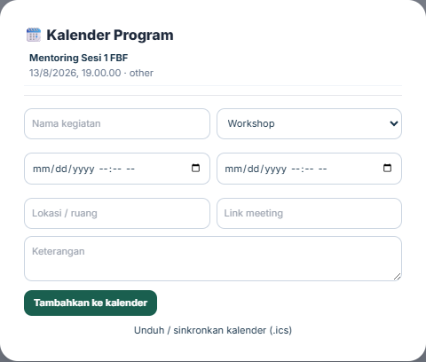
Jenis agenda
- Deadline tugas.
- Workshop.
- Sesi mentoring.
- Opening ceremony.
- Closing ceremony.
- Kegiatan tambahan.
Data minimum
Judul, waktu mulai, waktu selesai, lokasi/link meeting, deskripsi, dan visibilitas.
- Buat agenda sebelum diumumkan ke peserta.
- Gunakan zona waktu program secara konsisten.
- Uji link meeting.
- Pastikan perubahan jadwal diikuti notifikasi.
- Jika diperlukan, bagikan sinkronisasi Google Calendar.
12 · KehadiranMembuat presensi QR
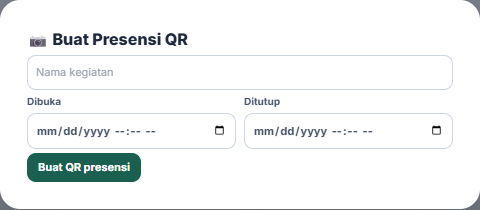
- Isi nama kegiatan.
- Tentukan waktu presensi dibuka dan ditutup.
- Klik Buat QR presensi.
- Tampilkan QR hanya saat kegiatan berlangsung.
- Periksa daftar kehadiran setelah sesi.
Jangan membagikan QR terlalu awal. Batas waktu membantu mengurangi penitipan presensi. Lakukan koreksi manual hanya jika ada bukti yang cukup.
Hubungan dengan disiplin
Sesi presensi→Hadir/Tidak hadir→Rekap→Peringatan→Status peserta
13 · KelulusanSertifikat otomatis dan kelayakan
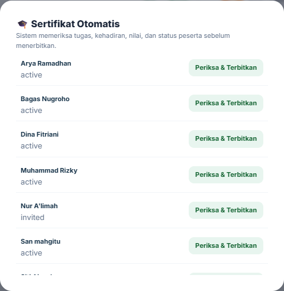
Syarat diperiksa
- Status peserta aktif.
- Persentase tugas selesai.
- Persentase kehadiran.
- Nilai/kualitas minimum.
- Ketentuan kelulusan program.
- Buka menu Sertifikat.
- Pilih peserta dan baca metrik kelayakan.
- Pastikan tidak ada submission/review tertunda.
- Terbitkan hanya jika seluruh syarat terpenuhi.
- Periksa nama dan nomor sertifikat sebelum dibagikan.
Nomor dan QR verifikasi digunakan agar penerima atau pihak ketiga dapat memeriksa keaslian sertifikat.
14 · RisikoDashboard kesehatan program
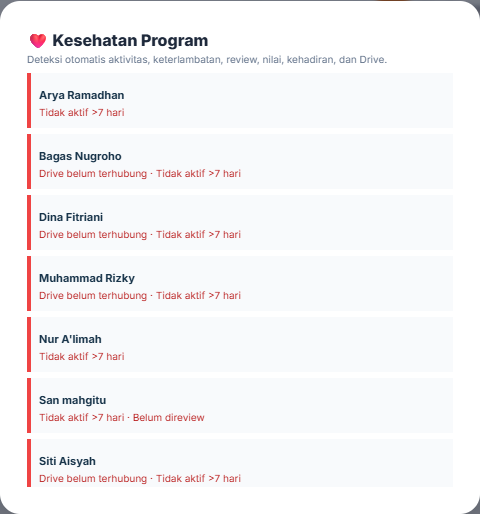
Indikator risiko
- Tidak aktif.
- Sering terlambat.
- Tugas belum terkumpul.
- Submission belum direview.
- Nilai menurun.
- Drive belum terhubung.
- Kehadiran rendah.
Tingkat respons
| Risiko | Tindakan |
|---|
| Rendah | Kirim pengingat dashboard/email. |
| Sedang | Koordinasi dengan mentor dan hubungi mentee. |
| Tinggi | Buat rencana tindak lanjut, dokumentasikan, dan evaluasi status. |
Gunakan indikator sebagai sinyal, bukan vonis. Konfirmasi konteks kepada mentor dan peserta sebelum mengambil keputusan disiplin.
15 · AkuntabilitasAudit Log
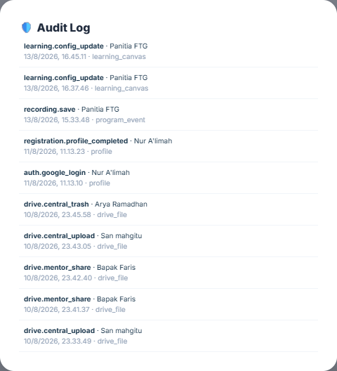
Gambar 7. Riwayat tindakan penting pada sistem.
Contoh tindakan yang tercatat
Perubahan programMinggu, fase, deadline, KPI, dan kelulusan.
PenilaianPemberi nilai, skor, feedback, dan keputusan revisi.
Status pesertaPeringatan, kunci akun, gugur, dan pemulihan.
IntegrasiUpload/hapus Drive dan perubahan layanan.
Jika terjadi komplain: cari waktu kejadian, pelaku, target, dan detail pada Audit Log sebelum melakukan koreksi. Jangan mengandalkan ingatan atau screenshot chat semata.
15 · Ketahanan dataBackup, laporan, dan ekspor
Buat BackupMengambil snapshot data operasional penting.
Unduh ExcelRekap peserta, nilai, kehadiran, dan aktivitas.
Laporan PDFDokumen ringkasan program untuk evaluasi.
Jadwal yang disarankan
| Waktu | Tindakan | Penyimpanan |
|---|
| Setiap minggu | Buat backup sistem | Folder arsip pengelola yang terbatas |
| Setiap bulan | Ekspor Excel monitoring | Drive pusat program |
| Akhir cohort | Backup final + laporan akhir | Arsip permanen program |
Data laporan mengandung informasi pribadi. Jangan menaruh rekap peserta pada folder publik. Batasi akses hanya untuk pengelola yang membutuhkan.
Rekap yang tersedia
Nilai, kehadiran, status pengumpulan, aktivitas mentor, peserta berisiko, status Google Drive, dan ringkasan akhir program.
16 · KomunikasiNotifikasi dashboard dan email
Event aplikasi→Notifikasi Supabase→Lonceng dashboard→Email outbox→Provider email
| Peristiwa | Penerima | Tindakan |
|---|
| Tugas baru | Mentee target | Buka dan kerjakan tugas |
| H-3/H-1/deadline | Mentee belum selesai | Segera menyelesaikan |
| Feedback/revisi | Mentee | Membaca dan memperbarui versi |
| Jadwal mentoring | Mentee/mentor | Membuka agenda |
| Status akun | Pendaftar/peserta | Mengetahui keputusan Fasil |
| Sertifikat | Peserta layak | Membuka sertifikat |
Status saat dokumen dibuat: notifikasi dashboard dan reminder aktif. Pengiriman email eksternal memerlukan provider seperti Resend atau Zoho ZeptoMail, domain terverifikasi, dan environment key di Vercel.
Etika notifikasi
- Judul harus jelas dan tidak menakut-nakuti.
- Hindari mengirim data sensitif pada isi email.
- Sediakan satu tombol tindakan yang tepat.
- Jangan memakai email transaksional untuk promosi massal.
KewenanganMatriks peran Fasil, mentor, dan mentee
| Aktivitas | Fasil | Mentor | Mentee |
|---|
| Menyetujui akun | ✓ | — | — |
| Mengatur program/kurikulum | ✓ | — | — |
| Membuat tugas global | ✓ | — | — |
| Membuat tugas kelompok | Monitor | ✓ | — |
| Mengisi Canvas/tugas | Monitor | Monitor kelompok | ✓ |
| Memberi nilai dan revisi | Monitor | ✓ | — |
| Mengelola LMS | ✓ | Lihat | Lihat |
| Membuat presensi | ✓ | — | Check-in |
| Mengunci/gugur | ✓ | — | — |
| Audit/backup/laporan | ✓ | Terbatas | Data sendiri |
Aturan utama: Fasil mengelola kebijakan dan operasi; mentor mendampingi serta menilai; mentee belajar dan mengumpulkan karya.
Pemisahan akses mencegah
Konflik kepentinganMentee tidak dapat memberi nilai sendiri.
Kebocoran dataMentor tidak melihat peserta di luar kelompoknya.
Perubahan liarHanya Fasil mengubah kebijakan program.
Troubleshooting cepat
| Masalah | Pemeriksaan | Tindakan |
|---|
| Halaman lama memuat | Koneksi dan status layanan | Tunggu indikator; muat ulang satu kali; cek Health Center |
| Pengguna tidak bisa login | Role, status akun, provider login | Pastikan aktif dan memilih halaman role yang benar |
| Google menolak akses | OAuth/domain/verifikasi | Periksa konfigurasi Google Cloud dan akun yang digunakan |
| File gagal diunggah | Ukuran, format, Drive pusat | Cek koneksi dan Health Center; jangan buat lampiran semu |
| Mentor tidak melihat mentee | Pairing | Periksa Cohort & Pairing |
| Minggu tidak terbuka | Mode dan minggu aktif | Periksa Kurikulum & Canvas |
| Email tidak terkirim | Provider dan domain | Periksa API key, domain terverifikasi, dan email outbox |
| Video tidak tampil | URL dan visibilitas YouTube | Gunakan URL valid dan video publik/unlisted |
Urutan eskalasi
- Catat pengguna, waktu, halaman, dan tindakan terakhir.
- Ambil screenshot yang tidak memuat password/token.
- Periksa Quality & Health Center dan Audit Log.
- Coba ulang dengan satu akun uji yang sesuai.
- Jika tetap gagal, laporkan dengan bukti lengkap kepada pengelola teknis.
Jangan pernah meminta pengguna mengirim password, token Google, API key, atau refresh token.
18 · ChecklistChecklist sebelum program dinyatakan siap
Akun dan akses
- Semua Fasil memakai akun sendiri.
- Mentor sudah disetujui.
- Mentee valid sudah aktif.
- Akun tidak dikenal diblokir.
- Pairing sudah benar.
Pembelajaran
- Minggu aktif benar.
- Pertanyaan Canvas final.
- Deadline tugas benar.
- Rubrik total 100%.
- Materi LMS dapat diputar.
Kegiatan
- Kalender telah diperbarui.
- Link meeting diuji.
- Presensi QR dibuat.
- Waktu menggunakan zona yang benar.
- Notifikasi dijadwalkan.
Integrasi
- Database sehat.
- Drive pusat sehat.
- Reminder sehat.
- Email provider sehat/terkonfigurasi.
- Backup berhasil dibuat.
Monitoring
- Tidak ada review terlalu lama.
- Peserta berisiko ditindaklanjuti.
- Ketidakhadiran diperiksa.
- Audit log normal.
- Laporan dapat diunduh.
Akhir program
- Nilai final lengkap.
- Kehadiran final lengkap.
- Status peserta final.
- Sertifikat diverifikasi.
- Backup dan laporan akhir diarsipkan.
Program siap digunakan apabila seluruh checklist kritis selesai dan tidak ada masalah integrasi yang belum diketahui penanggung jawabnya.
PenutupRingkasan tanggung jawab Fasil
Dashboard Fasil adalah pusat tata kelola program. Kualitas program tidak hanya ditentukan oleh banyaknya fitur, tetapi oleh konsistensi penggunaan data, kejelasan keputusan, keamanan akun, dan kecepatan tindak lanjut.
Kelola dengan dataGunakan dashboard kesehatan, tugas, kehadiran, dan progres sebagai dasar tindakan.
Dampingi dengan konteksKonfirmasi kepada mentor dan mentee sebelum keputusan besar.
Lindungi aksesJaga akun, token, laporan, serta data pribadi peserta.
Catat keputusanGunakan audit log dan catatan objektif untuk akuntabilitas.
Tautan penting
Dokumen ini tidak memuat password. Simpan kredensial menggunakan pengelola password dan lakukan pergantian akses ketika anggota tim berubah.
Faith to GroW × Global Inspire
Future Builders Fellowship 2026